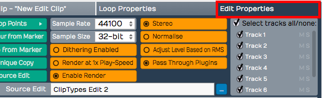
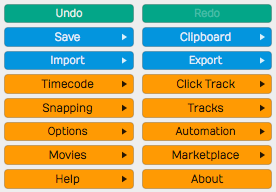

The Edit Tab¶
The Edit tab is where you record, arrange, edit and mix an Edit. This chapter walks through its layout and the names of its parts, which the rest of this book uses throughout.
📝 Note: The keyboard shortcuts in this chapter are the default key mappings. To follow along, restore them with Settings > Keyboard Shortcuts > Reset to Defaults > Restore default Waveform key mappings.
The Parts of a Waveform Edit¶
The Edit tab is made up of several panels: the Browser, the Arrangement (with an inline mixer beside each track), the Actions panel, the Detail Editor, the Mixer and the transport bar. All of them except the transport bar can be shown or hidden from the View menu.
The Detail Editor sits at the bottom of the Edit and shows the selected clip, track or plugins in more detail (View > Show Content Editor). See The Detail Editor. The Mixer shows every track as a vertical channel strip (View > Show Mixer, or M). See The Mixer below.

Parts of the Edit tab: A, Browser. B, Arrangement. C, transport bar. D, Actions panel
The Browser¶
The Waveform Browser sits on the right side of the Edit by default. You can open or close it by pressing B, by choosing View > Show Browser, or by clicking the eye button at the top right of the window and then clicking the Browser block. Its tabs give you quick access to actions, media, plugins, tracks and markers.
💡 Tip: You can dock the Browser on the left, right or top of the Edit. Click the eye button at the top right of the window, then drag the Browser block in the pop-out to the left, right or top edge.

Browser Open/Close Icon, A. Browser Tabs, B.
The Browser tabs are:
Actions: The Actions tab shows context-sensitive actions and properties for whatever you currently have selected. See The Actions Panel for full details.
Files: The Files tab is a filesystem browser for navigating directly to audio files on your system, the Project folder, or your drives. You can bookmark folders for quick access to your loop libraries, and audition files before dragging them in. See The Files Tab in The Browser chapter.
Search: The unified Search tab lets you search plugins, plugin presets, rack presets, samples and loops, clip presets and track presets in one interface, filtered by category and by tags. This is the main content browser. See The Browser.
Groups PRO: The Groups tab lists your Edit Mix Groups and lets you create and manage them. It needs Waveform Pro or the Recording Engineer Expansion. See Edit Mix Groups.
Tracks: The Tracks tab lists the tracks in the Edit, each with Hide and Disable buttons. To tag tracks, select them and fill in Tags in the Actions panel. The Tags box below the list shows the tags in use; click the ones you want, then turn on Show Only Tagged Tracks to filter the arrangement down to the tracks with those tags.
Markers: Use the Markers tab to add bars & beats or timecode markers to the Marker track. Click a marker's name to jump to it. You can delete the selected marker, or change its name or marker type, in the Actions panel.
Plugin: The Plugin tab hosts a single plugin running live on the Edit's main output. Use it for a tuner, analyser or other tool you want always on hand. It is shown by default; to remove it, turn off Show Plugin panel in browser in Settings > Plugins (the change takes effect the next time you open an Edit). See The Plugin Panel.
Assistant: The Assistant tab hosts the AI Assistant, a chat panel where you can make natural-language requests. It is shown by default; to hide it, turn off Enable AI Assistant in Settings > AI. See The AI Assistant.
For more about the Browser, see The Browser.
💡 Tip: Resize the Browser by dragging its inner edge (the one facing the arrangement). This helps with the Search tab, whose columns can otherwise be cut off.
The Arrangement¶
The Arrangement is made up of the Timeline, Track Headers & Inputs, Tracks, and the inline mixer.

Parts of the Arrangement: A, The Timeline. B, Track Headers & Inputs. C, Tracks. D, The inline mixer
Timeline¶
The Timeline acts as a ruler, measuring the time of the Edit. It usually shows bars and beats, but you can right-click it to show seconds and milliseconds, or seconds and frames, instead.
The Timeline is related to several other onscreen features:
In marker and Out marker: The range between the In marker and the Out marker defines what is called the "marked region" in Waveform. In other DAWs this is often called the "loop" or "cycle". The marked region defines looped playback, loop recording, and many of Waveform's editing options. The keyboard shortcuts are I to position the In marker, and O to position the Out marker.

In marker and Out marker
Tempo Track: When open, the Tempo track appears below the Timeline. This is where you set the tempo and tempo changes. Press F9 to open or close it.

Tempo Track
Marker Track: The Marker track opens below the Timeline. It can show bars & beats markers (such as song sections), absolute markers in terms of hours:minutes:seconds and milliseconds, or both combined. Show or hide it with F10. The Cycle Marker track view mode command steps through the combined, bars & beats, absolute and hidden views; it has no default key.

Marker Track
Other Global Tracks: The Tempo and Marker tracks are two of the global tracks that sit between the Timeline and your tracks. The Master track is in every edition. The Chord track PRO (Waveform Pro or the MIDI Producer Expansion) and the Arranger track PRO (Waveform Pro) have their own chapters: The Chord Track and The Arranger Track. In Waveform Pro the eye button's pop-out also has an Overview block PRO, a strip that shows the whole Edit. Show or hide each one from View > Global tracks, or hide them all at once with Show global tracks in the same submenu.
The Clip Object: The Clip object sits above the right side of the Timeline. Some Waveform users call it a "clip dragger" or "clip maker". Drag it to a track to create an empty clip of any of the four types: MIDI clip, Audio clip, Edit clip, or Step clip. Drop it on the Marker track to add a bars and beats marker or an absolute timecode marker, or on the Chord or Arranger track to insert a Chord or Arranger clip.

A Clip object, B Plugin object, C Modifier object
The Plugin Object: Drag the Plugin object to the inline mixer of any track to insert an audio effect plugin or virtual instrument. When you drop the Plugin object, you get a menu of all available plugins and instruments. You can control the organisation of the menu from the Settings > Plugins page. Right-click the Plugin object to open the plugin selector without dragging, or drop it on an Audio clip to add a clip plugin. See Using Plugins for more about inserting and using plugins.
The Modifier Object: The small button to the right of the Plugin object is the Modifier object (Drag this onto a track to create a new modifier). Drop it on a track and choose a modifier type. The LFO is in every edition; Breakpoint, Step, Envelope follower, Random and MIDI Tracker need Waveform Pro or the MIDI Producer Expansion. See Modifiers.
Showing Panels and the CPU Meter¶
Show/Hide Panels: Several areas of the Edit tab can be opened for use or closed to declutter the screen. Click the eye button at the top right of the window to open a small map of the window, then click a block to show or hide that part: the Overview, Arranger, Tempo, Marker, Chord and Master tracks, the track inputs, the inline mixer, the Arrangement, the Detail Editor, the Mixer, the Browser, Quick Actions and the Actions panel. Some blocks only appear in editions that include those features. Right-click the eye button for the View menu, which has the same options. These are the default keyboard shortcuts:

Show Hide Buttons. A, Show/Hide the Tempo track. B, Show/Hide the Inputs. C, Show/Hide the inline mixer, D, Show/Hide the Actions panel, E, Show/Hide the Marker track
- Show/Hide Tempo track (F9)
- Show/Hide Marker track (F10)
- Show/Hide inputs section (Shift + F12)
- Show/Hide inline mixer (V)
- Show/Hide Mixer (M)
- Show/Hide Browser (B)
- Show/Hide plugins, Browser and Actions panel (Shift + F11)
The Actions panel has no default key. Use the Actions panel button at the left of the transport bar or View > Show Actions. Opt + F11 / Alt + F11 locks the Actions panel to the current selection.
CPU Meter: To the left of the eye button at the top right of the window, a round meter shows the audio engine's CPU load as a percentage, with a ring of segments that runs from green through yellow to red as the load rises. A warning triangle replaces the number when reading audio files from disk falls behind. If the load stays near 100%, Waveform shows a "CPU Overload!" message, turns off running the playback engine while stopped (press Panic to turn it back on) and, if the overload carries on, stops playback.
Click the meter to open the CPU Usage window for the Edit. Its top rows show the Sample Rate, Block Size and Block Duration, the average, maximum and minimum load, X-runs, and the input and output latency. Below them, a table lists the Edit's plugins (plus audio file reading) with each one's track, CPU time, CPU percentage and latency, and whether its track is monitoring a live input. The buttons are Low Latency Monitoring (disables the highest-latency plugins on tracks with live inputs), Freeze Edit to Lower CPU, Freeze Selected Tracks (shown when Group by Track is on), Show Selection In Edit, Group by Track, and Disable Selected Plugins / Enable Selected Plugins. The freeze buttons change to Unfreeze Edit and Unfreeze Tracks once the tracks are frozen.

The CPU meter beside the eye button, and the CPU Usage window it opens
The Track Section¶
Tracks appear as parallel lanes that contain and organise clips of audio and MIDI. Signal flows from left to right: from the inputs, to the clips for recording, to the inline mixer and its plugins, then on to the master output. Ordinary tracks can hold any kind of clip: Audio clips, MIDI clips, Step clips, or Edit clips. To create a new track, press T. Waveform also has Folder tracks and Submix tracks for grouping tracks, and automation tracks for automation curves.
Track Headers: The leftmost column of the Arrangement forms a list of track headers. Click the track name in a header to select that track; more track properties appear in the Actions panel. To rename a track, right-click the track header and choose Rename track. To reorder tracks, drag a track by its header to a new position.

Track Headers
Inputs: Inputs appear as right-facing rectangular arrows. Click an input for a menu that includes the available inputs, and use it to set up a track for recording. More input options are in the Actions panel. You can also drag an input to another track to continue recording.

Inputs
💡 Tip: Resize tracks using the zoom tools in the lower right corner of the arrangement.
Clips¶
You can drag in audio files and loops to build your Edit, or record them directly. The same goes for MIDI clips. Step clips are an in-line step sequencer, and a variation on MIDI clips. Edit clips embed an entirely different Edit into your Edit as a single clip. Select any kind of clip to see more properties and actions in the Actions panel.
Audio Clips: Audio clips are created during recording or can be dragged in from the Browser or desktop. Waveform has tools to split, combine and reverse Audio clips, or change their pitch, timing or speed. You can also edit Audio clips with Melodyne to adjust the intonation of recorded notes. Clip Layer Effects add more ways to process Audio clips; see Clip Layer Effects.

Audio Clip
MIDI Clips: MIDI clips are the Waveform container for MIDI performance data. The clips have many of the same editing features as Audio clips. Expand MIDI clips vertically to see the full in-line piano roll MIDI editor, which has tools for entering and editing MIDI notes.

MIDI Clip
Step Clips: Step clips are an inline step sequencer for entering MIDI notes on a grid. They suit drum beats and rhythms, and work for basslines, synth leads and other parts too. Some Waveform users program complete compositions entirely with Step clips.

Step Clip
Edit Clips: An Edit clip embeds an entire Edit into a clip. For complex drum programming, you can keep all the drums in a separate Edit. You can also compose songs in blocks: develop the verse, chorus and bridge in separate Edits and bring them together in another Edit. Teachers use Edit clips to record several students singing over the same underlying track.

Edit Clip
Edit clips behave like Audio clips in the arrangement. The difference is an extra section in the Actions panel for managing the link to the underlying Edit.

Edit clip properties
The Inline Mixer¶
Each track has an inline mixer next to its clips in the arrangement. For each track, signal flows from left to right: input to clips, clips to inline mixer, inline mixer to the master output. The inline mixer is where you arrange plugins to build the channel strip the track needs. If the track has MIDI clips, insert a virtual instrument as its sound source. To EQ a vocal, drop in an EQ.
The Volume & Pan and Level Meter plugins are installed by default, and you can remove, reorder or add more instances of them. By default every track has:

Inline mixer default setup: A Volume & Pan plugin, B Level Meter plugin, C Mute and Solo buttons, D output destination
Volume & Pan Plugin: This acts like the channel fader and pan controls on a conventional mixer. Click either control for a larger version that makes the level or pan easier to adjust. Select the plugin to see its full set of properties in the Actions panel.
Level Meter Plugin: The level meter shows the level of audio on the track. You can add more instances or put the meter anywhere in the track using drag and drop. You can change the meter response between Peak, RMS, and Sum & difference from the right-click menu or from the Actions panel.
Mute: The Mute button mutes and un-mutes the track. Right-click the Mute or Solo button for Mute, Solo and Solo isolate. The keyboard shortcut for mute is Shift + M.
Solo: The Solo button silences all other tracks so you can hear one track at a time. Solo behaviour in Settings > General (Mixing Defaults section) sets how Solo works when several tracks are soloed (Choices: Cumulative solo, Exclusive solo; Default: Cumulative solo). The keyboard shortcut for solo is Shift + S. From the right-click menu you can choose Solo isolate, which keeps the track playing when another track is soloed. This suits a track set up as an effects bus.
Output destination: The button at the far right shows where the track's output goes (a speaker icon for an audio device). Click it to change the output destination for this track.
💡 Tip: Right-click either Mute or Solo for a menu. From here you can reset every track with Reset all muted/soloed/isolated tracks, or keep solo isolate and use Reset all muted/soloed tracks (Shift + Opt + M / Shift + Alt + M).

Mute/Solo Right-Click Menu
The Mixer¶

The Mixer, with a channel strip for every track.
The Mixer displays every track as a vertical channel strip, like a hardware mixer. Open it with M, with View > Show Mixer, or by clicking the Mixer block in the eye button's pop-out at the top right of the window. Tab switches between the Arrangement and the Mixer. The clip launcher grid shown above the strips needs Waveform Pro or the Launcher Expansion; see Clip Launcher.
Menus¶
The main menu holds a full set of menus related to the Edit: File, Edit, Options, Automation, Click, Snap, Sync, Track, Video, View, Help and Actions. On macOS they are in the menu bar at the top of the screen; on Windows and Linux they are at the top of the window. This manual refers to these menus using a path syntax separated by "greater-than" symbols. For example, to set a one bar count-in, choose Click > Count-in > 1 bar.
In the File menu, File > Close this Edit closes the Edit's tab, and File > Export: Render to a file... opens the Render dialog (see Rendering and Stems).

The Edit menus
The Actions Panel¶
What is shown in the Actions panel depends on what object you have selected. Each track, input, clip, plugin, rack, and automation point has its own set of properties and actions. Click to select any object and the Actions panel automatically switches to show the values and actions relevant to whatever you have selected. This idea is central to how Waveform works. The Actions panel is a flat list at the side of the window, and can also be opened from the Browser. To show or hide it, click the Actions panel button at the far left of the transport bar, choose View > Show Actions, or click its block in the eye button's pop-out. Opt + F11 / Alt + F11 locks it to the current selection.

The Actions panel
The Transport Bar¶
The transport bar runs along the bottom of the window and contains cursor position information, the Transport, the master plugins, the master volume control, and a set of global control buttons.

The transport bar: A, left-hand buttons. B, transport bar buttons. C, the Transport. D, cursor position info. E, master plugins. F, Master level and meter
Cursor Position Info: At one end of the transport bar, a readout shows the tempo, time signature and key/scale at the cursor position, next to two clocks that show the location.
- Click the tempo to type a new BPM (20-300), or drag it to change the tempo.
- Click the time signature or the key to open their actions.
- Click and edit any part of a clock to move the cursor to that location.
You can also drag any of the components of a clock up and down to move the cursor. The upper clock matches the format you have set for the Timeline. The lower clock shows seconds when the Timeline shows bars and beats, and bars and beats otherwise.
The Transport: The Transport is made up of nine buttons: Read and Write (automation read and write modes), Play, Record, Panic, Rewind (back to the start of the Edit), Back, Forward and Retrospective Record, which creates clips from previously captured audio and MIDI input. The Panic button resets Waveform's audio engine. While you are recording, Abort and Abort & Restart appear in the lower row. You can assign keyboard shortcuts to all of them. See Recording Audio.
Master Plugins: The master plugins slot holds up to four plugins for final processing like compression and limiting. Drop plugins from the Browser or the Plugin object into it, or right-click it to add one. It is the same plugin chain as the Master track. To hide the master plugins, master volume and meter from the transport bar, turn off Show master plugins in transport bar in Settings > Appearance. (Default: on)
Left-Hand Buttons: At the left of the transport bar are the Actions panel button (Show or hide Actions panel), Undo and Redo, followed by buttons that appear only when their feature is available: Groove Doctor PRO (Show or hide Groove Doctor window, Waveform Pro or the Recording Engineer Expansion; see Groove Doctor), coloured waveforms PRO (Toggles displaying waveforms with frequency information, Waveform Pro or the DJ Mix Tools Expansion), Quick Actions PRO (Show or hide Quick Actions window, Waveform Pro; right-click it for the Quick Actions bar), MIDI typing (Show or hide MIDI typing window) and, when the Edit has a video, the Video window. Between these and the Loop, Click and other mode buttons sits the breadcrumb, which opens the action menu for the current selection (see The Actions Panel).
Transport Bar Buttons: The transport bar includes eight buttons to access commonly used global on/off functions. See Transport Bar Buttons below.
Master Level: The Master level sets the final volume of the entire mix, and its pan control sets the balance between left and right. The pan control usually stays centred.
Master Meter: The Master meter shows the final output level. Right-click the meter to set the meter mode or reset any overload indicators.
Transport Bar Buttons¶
These buttons toggle some of Waveform's most used functions. Each description includes the button's shortcut.

The transport bar buttons
Loop: Loop (L) turns looping between the In marker and Out marker on and off. This is for both playback and loop recording. Right-click it for Loop follows selection.
Click: Click (C) turns the metronome click on and off. Right-click it for the Click menu.
Auto Lock: Auto Lock is short for "Automation Lock". It locks automation to clips: when it's on, the automation curves follow the clips as you move them. The shortcut is Shift + Cmd + A / Ctrl + Shift + A.
Punch: With Punch (P) turned on, Waveform only records when the cursor is between the In marker and the Out marker.
Snap: The Snap (Q) button turns snap-to-grid on and off. Right-click it for the Snap menu.
Autoscroll: With Autoscroll (S) turned on, Waveform pans the screen to keep the cursor on screen during playback and recording. Right-click it to choose Page scroll or Stationary cursor.
MIDI Learn: Click MIDI Learn to enter MIDI Learn mode. In this mode you can assign external knobs and faders to on-screen controls.
MTC: With MTC enabled, Waveform chases sync to incoming MIDI Time Code. Unless you are still syncing to tape or hardware sequencers, leave MTC off.
Moving On¶
For more on the panels introduced here, see The Detail Editor, The Browser and The Actions Panel.